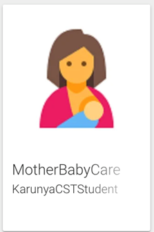

1: Karunya App

An Information Portal about the Division, notifying students and faculties of the division of various events and activities. Also, enabling students to contact faculties and also enrolling for various clubs and certification courses provided by the Division.
2: Yummy App

YummyApp is an android based recipe application for the people who are new to cooking. This app has various new features that are not present in similar application present in Google Play Store, like the feature of locating nearby groceries shops, and a reminder system. Some other unique features that are present in this app include an integrated clock, to time the recipe making, an ingredients calculator which calculates the amount of ingredients needed according to the number of people eating the particular recipe.
3: Border Detector for Fisherman
As we all have noticed that Indian (especially Rameshwaram) fishermen are being arrested by the neighbouring countrymen for UNKNOWINGLY CROSSING the national boundary. We felt the need to find a solution for this problem. Sea Border Detector is an app that would display the national boundaries, indicate user's location, and raise alarms on getting closer to the boundary.
4: Advanced Tour Guide
The application displays relevant information regarding the location such as weather, user reviews and gives directions to that place.This application aims to be a virtual tour guide.
5: K-Shop

This app enables the various users in the Karunya Institute such as staff, faculty and students to register themselves with the app and post the details of their used products to sell. This will help the other people in the Karunya Community to search for the required products and buy them, if they are interested. This app provides an easy to communicate with other communities in Karunya for exchanging information related to selling and buying the used products. Also the app has an option of ‘Request a Requirement’ in which the user can upload their requests according to the need specified in the description so that any user who has the specific product can approach the poster for further proceedings.
6: Stanley on Bible
Stanley On Bible is an Offline Android Application for StanleyOnBible.com.StanleyOnBible.com is a Bible Teaching website with Brother R. Stanley’s written materials under the sections of General Messages, Bible Studies, Sermon Outlines,Doctrinal Essays, Youth Matters, Leaders' Column, Missionary Challenge, etc.
7: Mother Baby Care
Worried about your pregnancy. Hey here is your app. Understand about the prenatal period by using pre delivery option and postnatal to take care of your baby. Use baby Kicks to feel the exciting moments in your pregnancy, those first little flutters of your baby kicking. Prenatal period is divided into three trimesters. Go through the sections of trimesters to have a better understanding about the do’s and don’ts of your pregnancy. You are guided weekly providing fetal images, journal, and weekly tips. Using journals you can enter your mood and notes for the week. Record your sweet pregnancy memories in the journal. The postnatal period tells how to nurture your tweety. Baby wears directs you to a website where you can choose the baby wears. Use reminders to schedule your reminders and set the push notification.
8: Profitness
This is a fitness app that focuses on health-care, diet and healthy habits. It has several modules or functionalities that are as follows:
- 1.Account Creation – Reads Name, Height, Weight, Gender and Age of the User.
- 2.Diet Chart – Creates a Diet plan every day depending on the BMI index of the User.
- 3.BMI Calculator – Calculates BMI from Weight and Height.
- 4.Explore Food – Detailed info on types of Healthy Food.
- 5.Personal Enhancer – Exercises and challenges based on Age and Gender.
- 6.Blood Volume – Calculates Blood Volume from Height, Weight and Gender.
- 7.Water Intake – Computes required water intake based on Weight.
- 8.Reminder – Generates and customizes daily reminders.
- 9.Pedometer – Tracks steps and calories burned.
9: Coimbatore Bus Guide
It’s a big problem for any new resident, who do not know the local language in any city to follow the bus systems and know which bus to take when and where to, at what time.“Coimbatore City Bus Route Guide” will render a solution to this problem and lend a helping hand to the troubled citizens, thus making their journey easier and saving a tremendous amount of time. This is an offline application. (No internet connectivity is needed) All the bus routes has been loaded in the database.
10: It’s an android mobile application that reminds the patient’s of their dosage timings through alarm ringing system.
It’s an android mobile application that reminds the patient’s of their dosage timings through alarm ringing system.
11: Smart Driver Assist
Smart Driver Assistance System is an assistance to the driver and it will give alert to the driver during critical situations .It will play songs,jokes and gives alarm sound,if driver is feeling sleepy or tired .Inputs may be taken from eye blinking and voice by driver .Through this road accidents can be avoided positively and also the traffic instruction can be given to the driver.